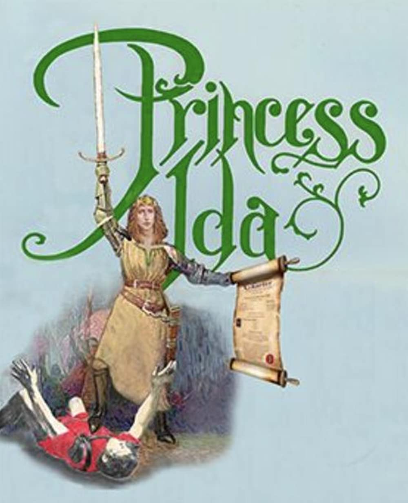

Asritha Baddam
Blanche:
I, madam, on Abstract Philosophy.
There I propose considering, at length,
Three points — The Is, the Might Be, and the Must.
Whether the Is, from being actual fact,
Is more important than the vague Might Be,
Or the Might Be, from taking wider scope,
Is for that reason greater than the Is:
And lastly, how the Is and Might Be stand
Compared with the inevitable Must!
Princess:
The subject's deep — how do you treat it, pray?
Blan.:
Madam, I take three possibilities,
And strike a balance then between the three:
As thus: The Princess Ida Is our head,
the Lady Psyche Might Be, — Lady Blanche,
Neglected Blanche, inevitably Must.
Given these three hypotheses — to find
The actual betting against each of them!
Opera Link
ICONS
article
grade
reorder
cached
rule
